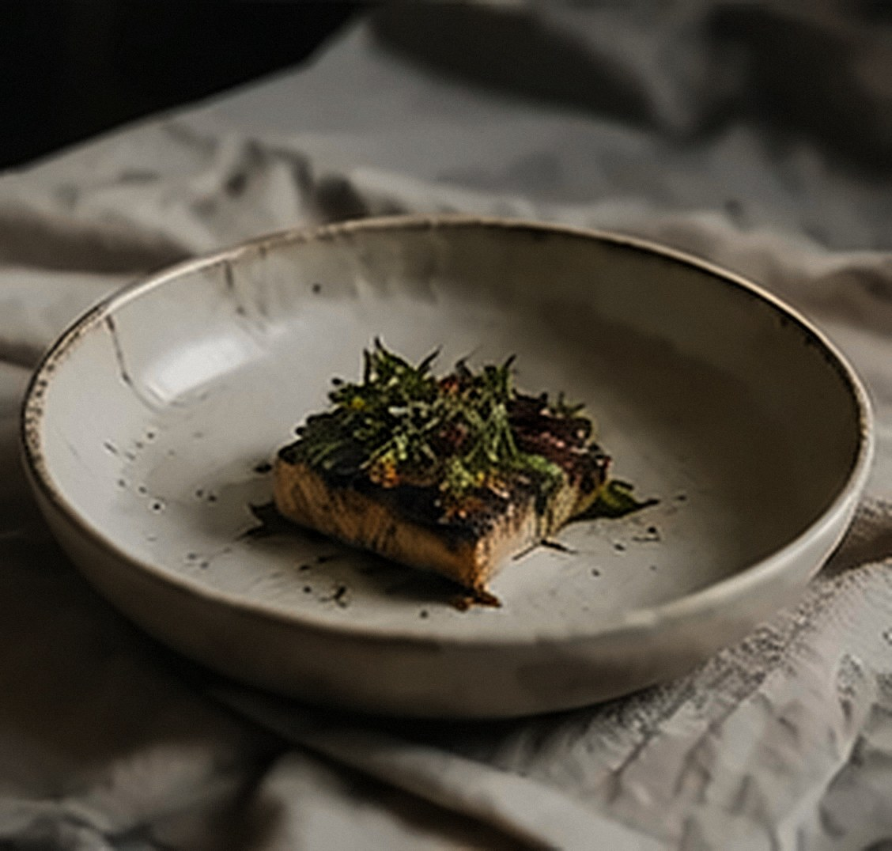

A thoughtful conversation between cultures.
Private dinners, wilderness feasts and events across Melbourne and Victoria. Seasonal Australian produce, cooked through Asian heritage.

Australian Terroir × Asian Heritage
Cubo takes its name from the kubo, the simple Filipino hut where people gather, close to nature. We cook with what the Australian land offers each season, through the flavours, techniques and traditions of Asia. Not a fusion, but a meeting of cultures.
Our storySeasonal & Local
Working with Australian producers and what the land offers.
Asian Heritage
Techniques, flavours, stories and traditions.
Nature & Culture
A deep respect for origin, people and place.
No Waste
Through fermentation, preservation, koji and slow processes.
Dinners, feasts & events
From intimate dinners to larger gatherings, tailored to your occasion.


The most memorable meals are not simply tasted — they are experienced, shared, and carried with us long after the final bite.

Meet Michelle
Chef and founder of Cubo
Michelle founded Cubo around a simple belief: that food brings us closer to nature, culture and one another. Her cooking sits where Australian produce and Asian heritage meet, led by the season and shaped by fire.
Michelle’s storyVenues, farms, wineries & makers
Cubo collaborates with venues, producers, farms, wineries, accommodation providers, artists and other culinary creatives to create unique food experiences.
Looking for culinary and hospitality consulting? Consulting
Let’s gather around the table.
Tell us about your occasion, your guests and the season. We’ll shape something around it.
Plan your gathering